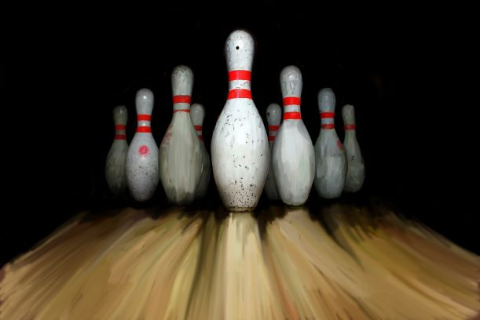
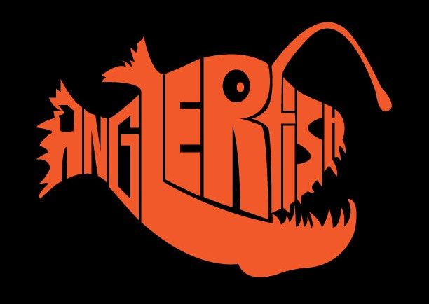

|  |
This project was from my AP 2D Studio Art class in high school. Each student was instructed at the beginning of the year to pick a concentration topic and display it in 12 pieces of art. My concentration topic was bowling and this specific piece is a digital painting created using Adobe Photoshop. It was created by using the paintbrush to lay down an initial layer of color and the mixer brush to blend the colors together giving it a painted look. |
 |
This was an assignment in my Digital Survey II class is college. The objective was to create an awareness poster for a specific issue, mine being suicide awareness. It was created using Adobe Illustrator. The pen tool and text tool were used for most of project. I went for a more simplistic design in order to represent the mind o someone with depression who'd be going through thoughts of suicide. |
|  |
This image was part of my Digital Survey I class. The assignment was to create the image of an animal using the letters in its name. This was semi-difficult because most of the initial animals I had chosen just didn't look well typographically. For whatever reason I had a fairly clear image of how I wanted the angler fish to look, my initial thought was that its jaw would make a great "L". The piece was created using the pen tool in Adobe Illustrator and sketching made creating the final product much simpler. |